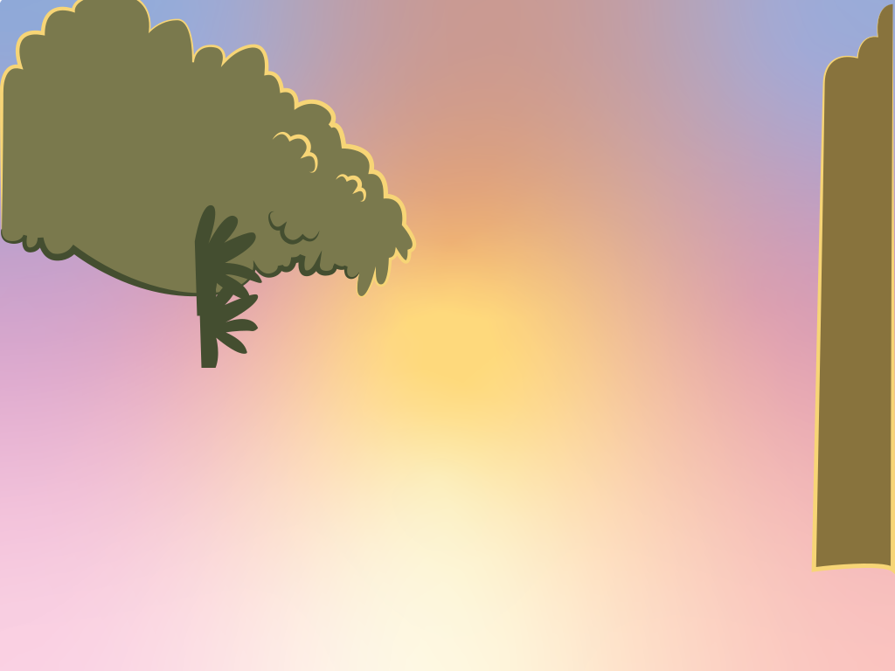
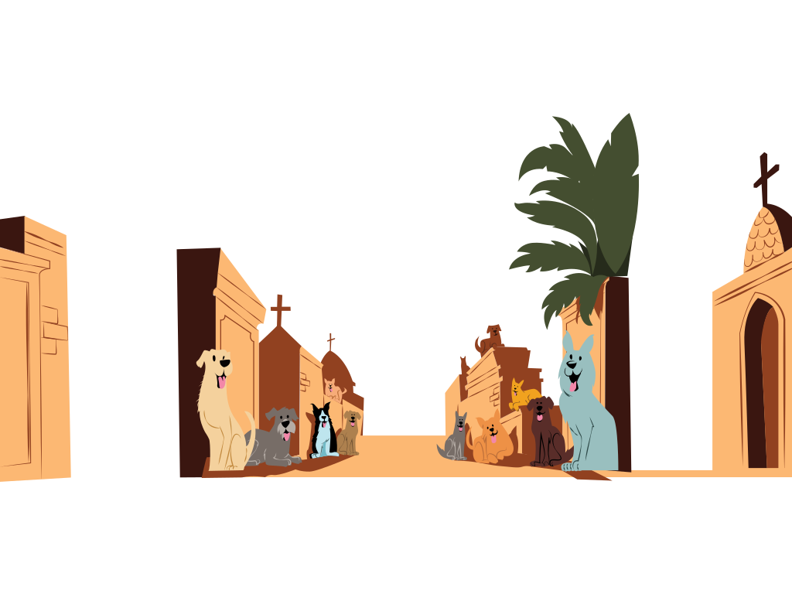
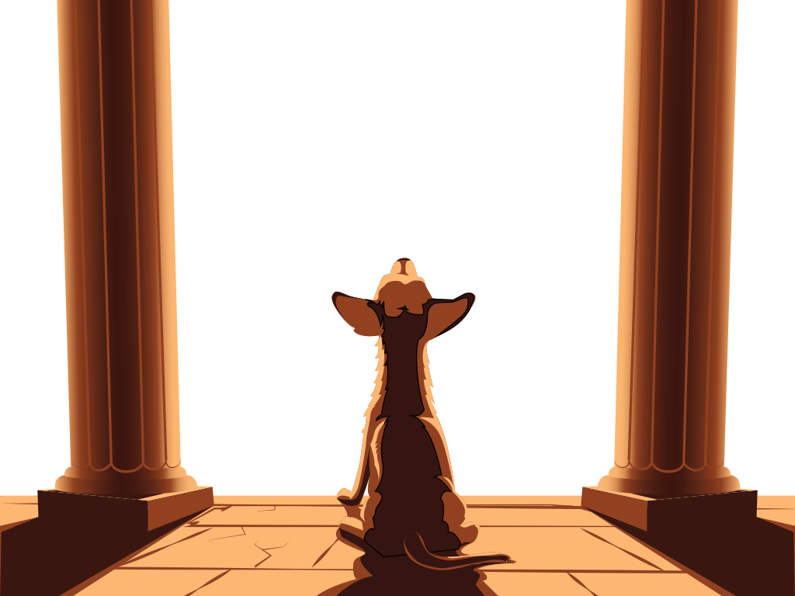
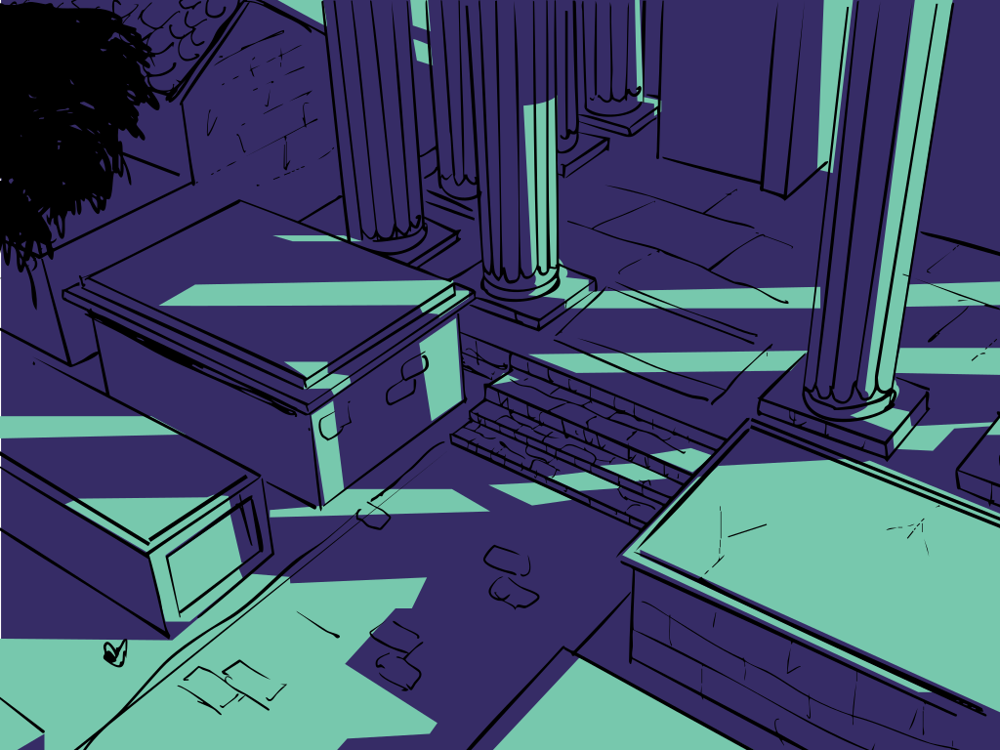
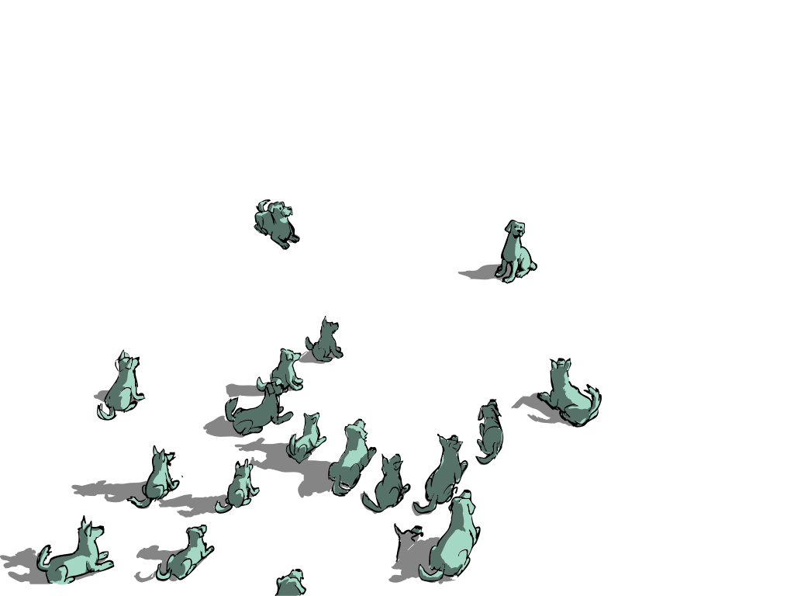
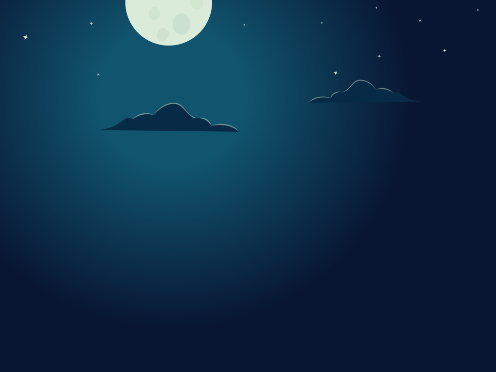
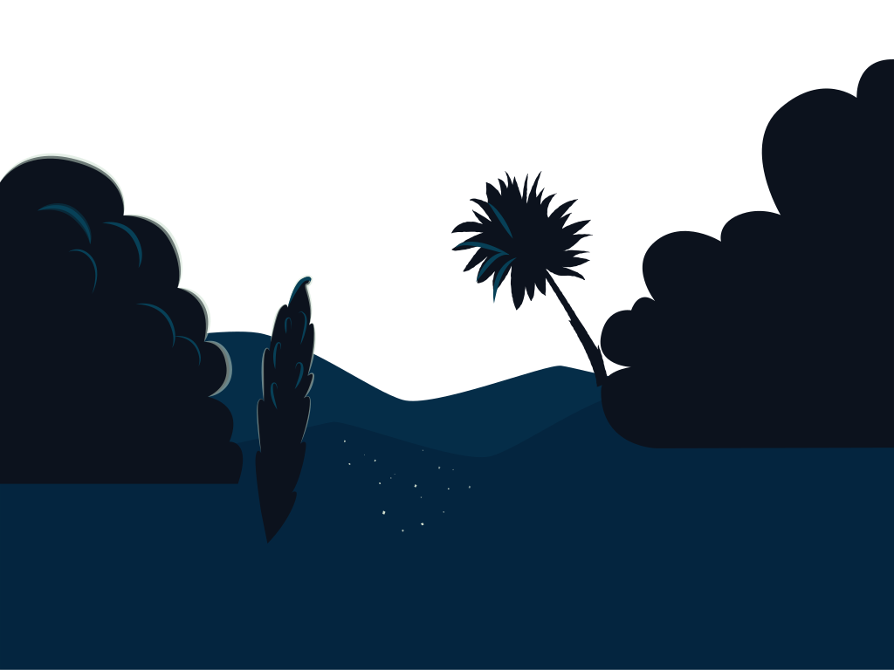
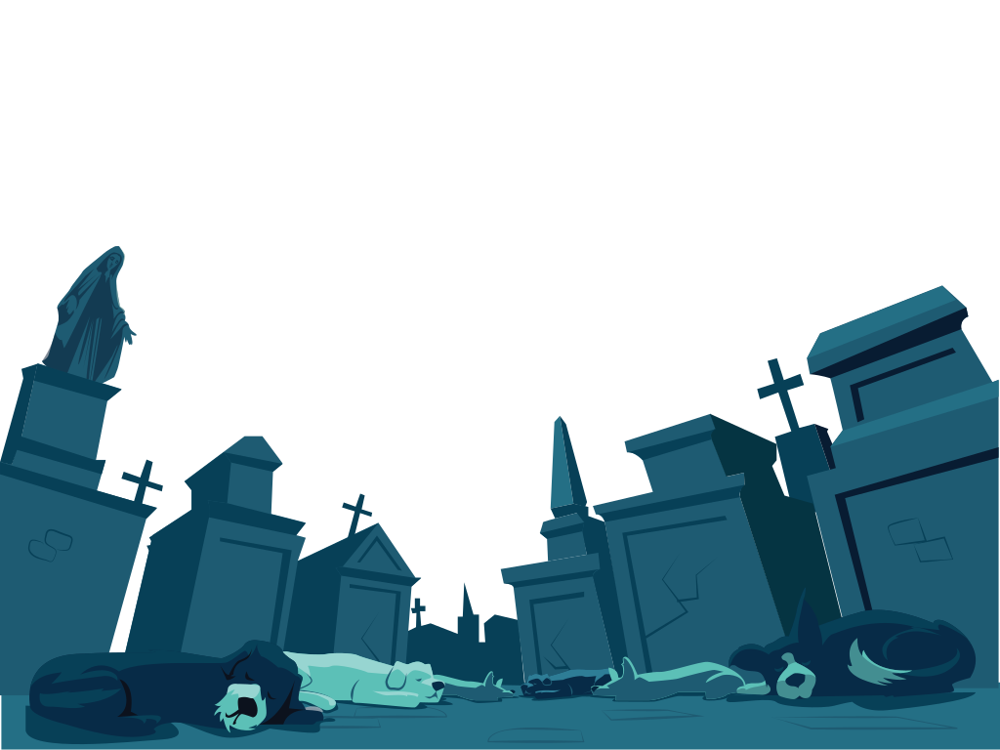

Caption: Online graphic novel about the street dogs of Valparaiso, written and illustrated by me.



As they reached the clearing, she brought her opening number to a rousing conclusion. Dozens of dogs gathered, drawn by her voice, while uniformed men installing loudspeakers and placards nearby scowled at the performance.
Their heckles, however, were drowned out by the enthusiastic howls of the growing audience. Violeta sang well past dusk, her melodies carrying into twilight.
She closed with familiar anthems, and the assembled dogs barked and howled their appreciation. As the applause lingered, Violeta spotted Pablo among the crowd. Knowing his gift for words, she motioned for silence and invited him to recite a poem.


Pablo hesitated at first, but the rising chorus of pleas coaxed him forward. He began softly, his voice weaving through the night air.
He spoke of the kind-hearted people of Valparaíso, then his tone deepened as he lamented the growing harassment from the uniformed men and the troubling disappearance of many friends.
His words swelled into a powerful refrain, one familiar to all:
Joyful, joyful, joyful,
as only dogs know how to be happy
with only the autonomy
of our shameless spirit!



After the applause faded, the crowd broke into murmuring conversations that stretched late into the night.
One by one, the dogs succumbed to sleep, curling together for warmth beneath a sky ablaze with stars.
Below, the city lights flickered out, leaving only the soft glow of the heavens.
Caption: Slide 3 - Bottom Right